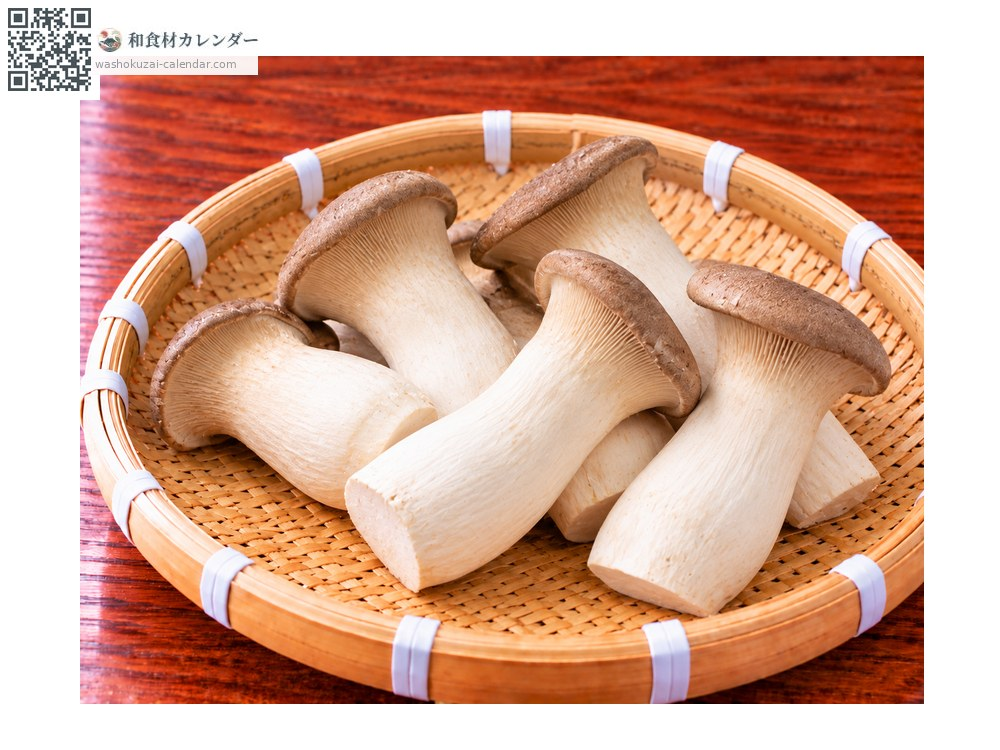
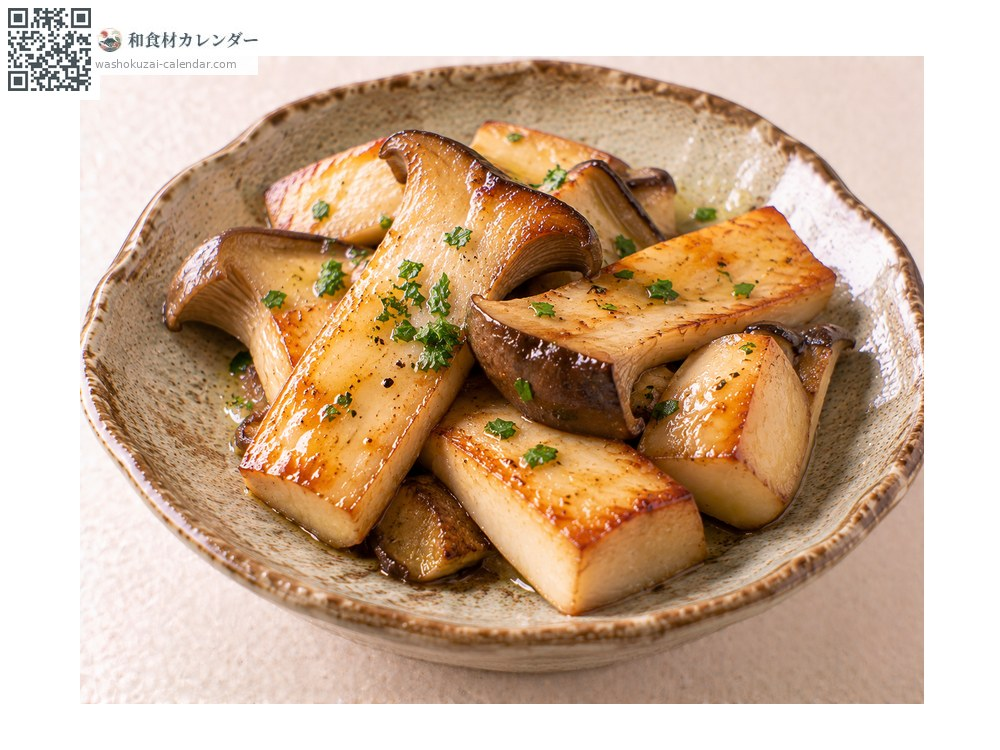
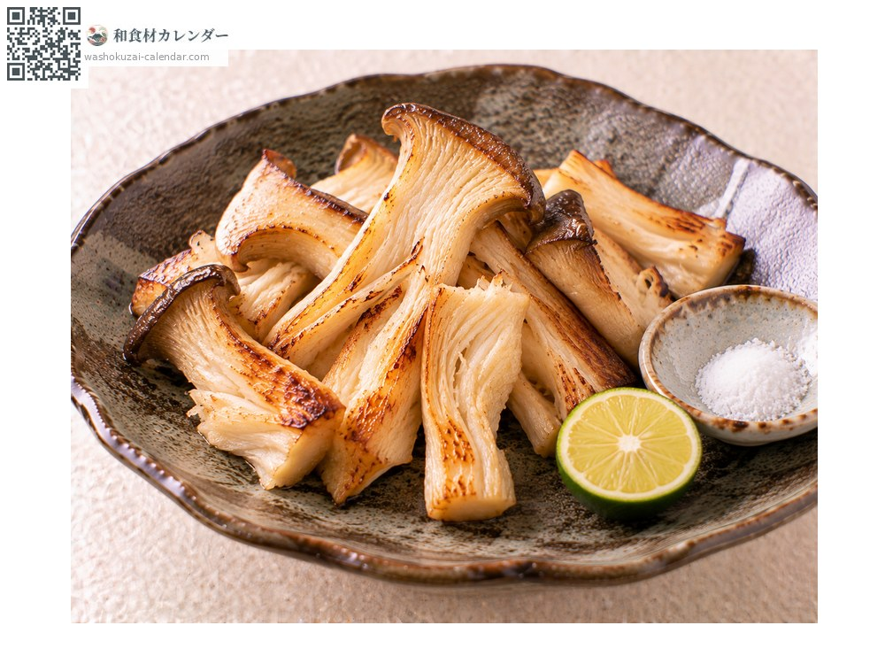
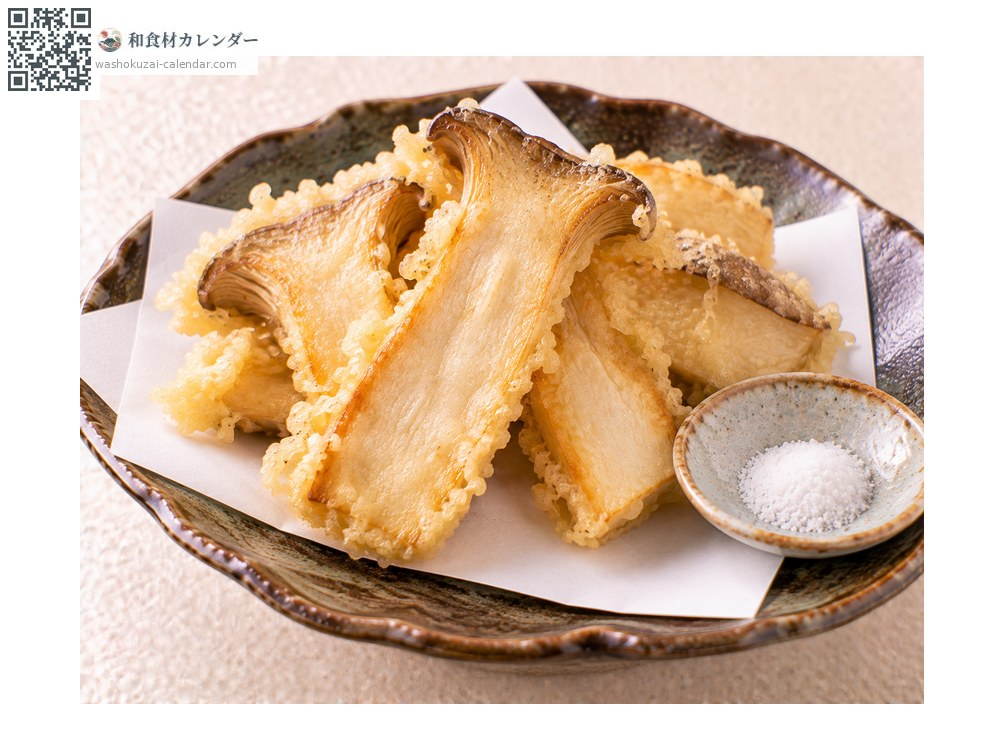
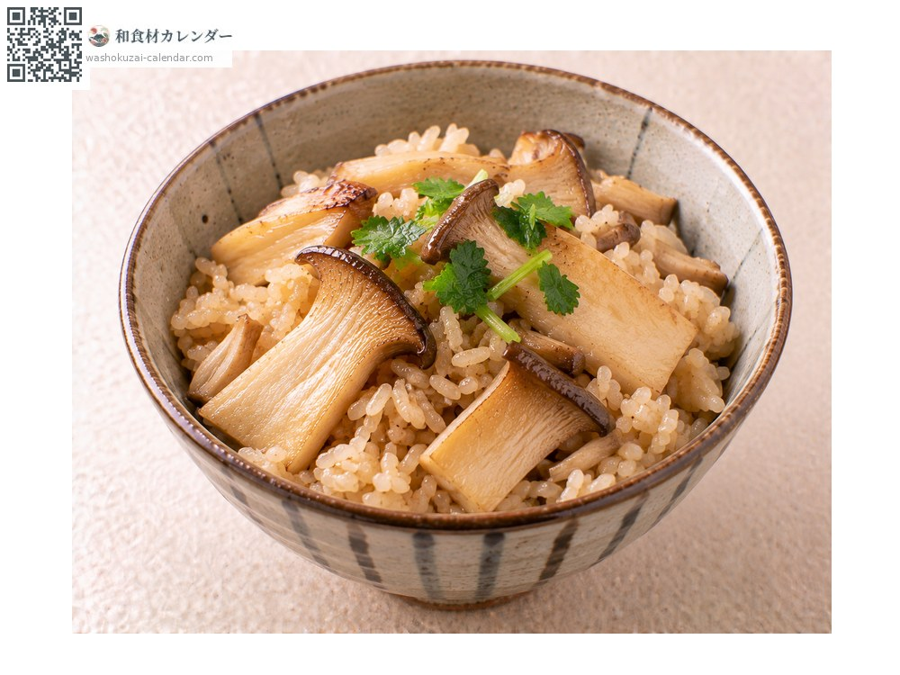

King oyster mushroom
エリンギ えりんぎ eringi
Also known aseringi
No peak season recorded

When it is at its best
In seasonAvailable
How to cook

Sautéed
Cut thick and pan-fried in butter; the bite is the point.

Grilled plain
Torn and grilled, with salt or soy sauce, which lifts the aroma.

Tempura
Cut lengthways and fried, which brings out the texture.

Takikomi gohan
Cooked with rice, to which it gives good flavour.
How to choose
Thick, straight white stems with small firm caps, and no sliminess.
Storage
Do not wash. Wrap in paper and refrigerate. It also freezes once cut.
Main areas
Good to know
Native to the Mediterranean, it has only been cultivated in Japan since the 1990s. Its bite is said to resemble abalone, and it suits Japanese, Western and Chinese cooking alike. The stem is thicker than the cap, and it is the stem that is mainly eaten.